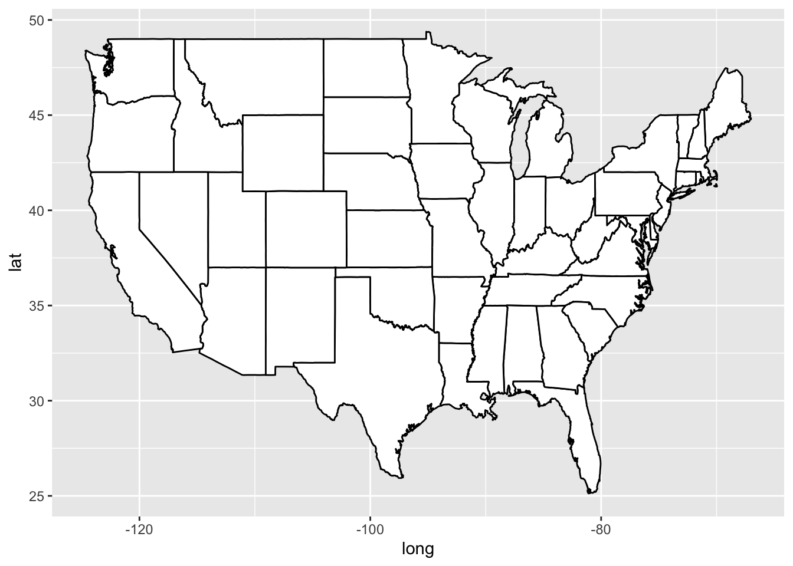
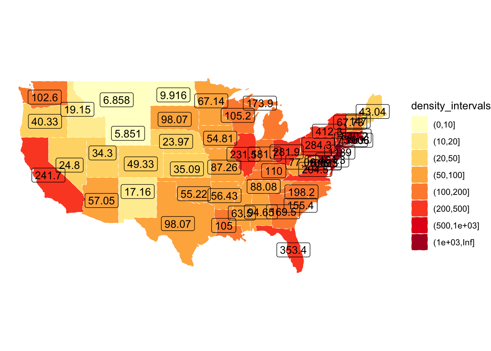
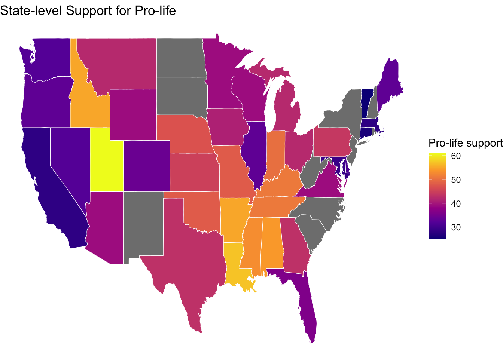
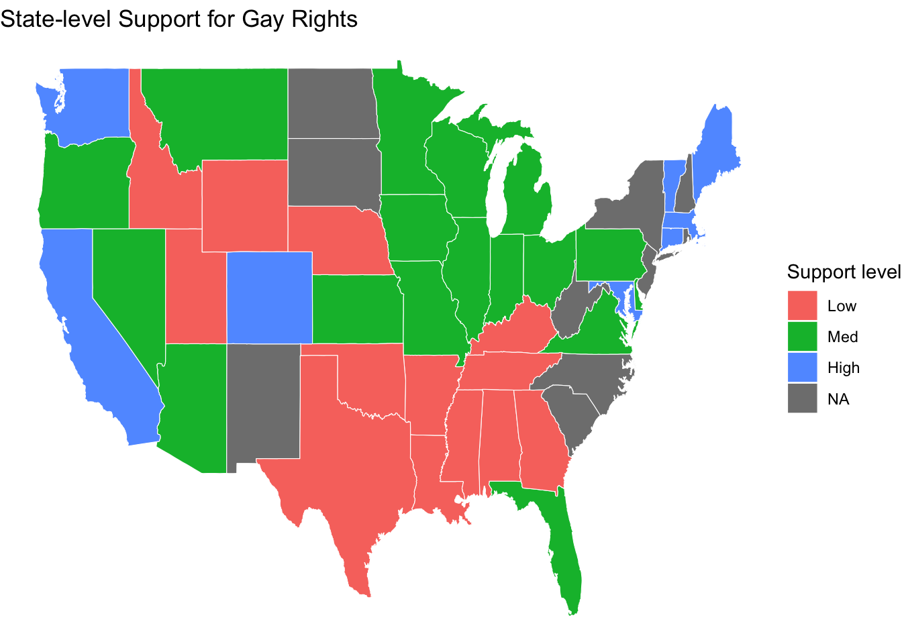

# Initial packages required (we'll be adding more)
library(tidyverse)
library(mdsr) # package associated with our MDSR bookCreating informative maps
Luckily, some maps are already created in R in the maps package.
library(maps)
us_states <- map_data("state")
head(us_states) long lat group order region subregion
1 -87.46201 30.38968 1 1 alabama <NA>
2 -87.48493 30.37249 1 2 alabama <NA>
3 -87.52503 30.37249 1 3 alabama <NA>
4 -87.53076 30.33239 1 4 alabama <NA>
5 -87.57087 30.32665 1 5 alabama <NA>
6 -87.58806 30.32665 1 6 alabama <NA>us_states |>
ggplot(mapping = aes(x = long, y = lat,
group = group)) +
geom_polygon(fill = "white", color = "black")
[Pause to ponder:] What might the group and order columns represent?
Answer: group = numeric value of the state order = it might be the numeric sequence that indicates the drawing order of points within that polygon
Other maps provided by the maps package include US counties, France, Italy, New Zealand, and two different views of the world. If you want maps of other countries or regions, you can often find them online.
Where the really cool stuff happens is when we join our data to the us_states dataframe. Notice that the state name appears in the “region” column of us_states, and that the state name is in all small letters. In vacc_mar13, the state name appears in the State column and is capitalized. Thus, we have to be very careful when we join the state vaccine info to the state geography data.
oops, New York appears to be a problem.
vacc_mar13 |>
anti_join(us_states, by = c("State" = "region"))
us_states |>
anti_join(vacc_mar13, by = c("region" = "State")) |>
count(region)[Pause to ponder:] What did we learn by running anti_join() above?
Answer: In vacc_mar13,the name for new york is “new york state” meanwhile in us_states, it is “new york”.
Notice that the us_states map also includes only the contiguous 48 states. This gives an example of creating really beautiful map insets for Alaska and Hawaii.
vacc_mar13 <- vacc_mar13 |>
mutate(State = str_replace(State, " state", ""))
vacc_mar13 |>
anti_join(us_states, by = c("State" = "region"))
us_states |>
anti_join(vacc_mar13, by = c("region" = "State")) %>%
count(region)Better.
Multiple maps!
You can still use data viz tools from Data Science 1 (like faceting) to create things like time trends in maps:
library(lubridate)
weekly_vacc <- vaccines |>
mutate(State = str_to_lower(State)) |>
mutate(State = str_replace(State, " state", ""),
week = week(Date)) |>
group_by(week, State) |>
summarize(date = first(Date),
mean_daily_vacc = mean(daily_vaccinated/est_population*1000)) |>
right_join(us_states, by =c("State" = "region")) |>
rename(region = State)
weekly_vacc |>
filter(week > 2, week < 11) |>
ggplot(mapping = aes(x = long, y = lat,
group = group)) +
geom_polygon(aes(fill = mean_daily_vacc), color = "darkgrey",
linewidth = 0.1) +
labs(fill = "Weekly Average Daily Vaccinations per 1000") +
coord_map() +
theme_void() +
scale_fill_viridis() +
facet_wrap(~date) +
theme(legend.position = "bottom") [Pause to ponder:] are we bothered by the warning about many-to-many when you run the code above? Answer: No, because the many-to-many join happens because easch state’s vaccination data is being matched to many polygon points in the map data, and that’s exactly what we want to draw the filled shapes. So the duplication is necessary for plotting.
Other cool state maps
statebin (square representation of states)
library(statebins) # may need to install
vacc_mar13 |>
mutate(State = str_to_title(State)) |>
statebins(state_col = "State",
value_col = "people_vaccinated_per100") +
1 theme_statebins() +
labs(fill = "People Vaccinated per 100")- 1
- One nice layout. You can customize with usual ggplot themes.
[Pause to ponder:] Why might one use a map like above instead of our previous choropleth maps? Answer: We can focus on the data values rather than the geography, therefore we can emphasize patterns well and the abbreviation of each state is enough.
I used this example to create the code above. The original graph is located here.
Let’s try pop-up messages with a data set containing Airbnb listings in the Boston area:
leaflet() |>
addTiles() |>
setView(lng = mean(airbnb.df$Long), lat = mean(airbnb.df$Lat),
zoom = 13) |>
addCircleMarkers(data = airbnb.df,
lat = ~ Lat,
lng = ~ Long,
popup = ~ AboutListing,
radius = ~ S_Accomodates,
# These last options describe how the circles look
weight = 2,
color = "red",
fillColor = "yellow")[Pause to ponder:] List similarities and differences between leaflet plots and ggplots.
Similarities: - Both plot map data to visual aesthetics, highly customisable - Both can layer elements to create a big picture visualisation
Difference: - ggplot is static; leaflet is more interactive - for ggplot we have to supply all of the coordinates; leaflet can work with geographic tiles like google maps - ggplot outputs are images (pdf png); with leaflet we can make html widgets like dashboards and apps
Interactive choropleth maps with leaflet
OK. Now let’s see if we can put things together and duplicate the interactive choropleth map found here showing population density by state in the US.
A preview to shapefiles and the sf package
- 1
-
sfstands for “simple features” - 2
- From https://leafletjs.com/examples/choropleth/us-states.js
- 3
-
Note that
stateshas classsfin addition to the usualtblanddf
[1] "sf" "tbl_df" "tbl" "data.frame"
Simple feature collection with 52 features and 3 fields
Geometry type: MULTIPOLYGON
Dimension: XY
Bounding box: xmin: -188.9049 ymin: 17.92956 xmax: -65.6268 ymax: 71.35163
Geodetic CRS: WGS 84
# A tibble: 52 × 4
id name density geometry
<chr> <chr> <dbl> <MULTIPOLYGON [°]>
1 01 Alabama 94.6 (((-87.3593 35.00118, -85.60667 34.98475…
2 02 Alaska 1.26 (((-131.602 55.11798, -131.5692 55.28229…
3 04 Arizona 57.0 (((-109.0425 37.00026, -109.048 31.33163…
4 05 Arkansas 56.4 (((-94.47384 36.50186, -90.15254 36.4963…
5 06 California 242. (((-123.2333 42.00619, -122.3789 42.0116…
6 08 Colorado 49.3 (((-107.9197 41.00391, -105.729 40.99843…
7 09 Connecticut 739. (((-73.05353 42.03905, -71.79931 42.0226…
8 10 Delaware 464. (((-75.41409 39.80446, -75.5072 39.68396…
9 11 District of Columbia 10065 (((-77.03526 38.99387, -76.90929 38.8952…
10 12 Florida 353. (((-85.49714 30.99754, -85.00421 31.0030…
# ℹ 42 more rowsFor maps in leaflet that show boundaries and not just points, we need to input a shapefile rather than a series of latitude-longitude combinations like we did for the maps package. In the example we’re emulating, they use the read_sf() function from the sf package to read in data. While our us_states data frame from the maps package contained 15537 rows, our simple features object states contains only 52 rows - one per state. Importantly, states contains a column called geometry, which is a “multipolygon” with all the information necessary to draw a specific state. Also, while states can be treated as a tibble or data frame, it is also an sf class object with a specific “geodetic coordinate reference system”. Again, take Spatial Data Analysis for more on shapefiles and simple features!
Note also that the authors of this example have already merged state population densities with state geometries, but if we wanted to merge in other state characteristics using the name column as a key, we could definitely do this!
First we’ll start with a static plot using a simple features object and geom_sf():
# Create density bins as on the webpage
state_plotting_sf <- states |>
mutate(density_intervals = cut(density, n = 8,
breaks = c(0, 10, 20, 50, 100, 200, 500, 1000, Inf))) |>
filter(!(name %in% c("Alaska", "Hawaii", "Puerto Rico")))
ggplot(data = state_plotting_sf) +
geom_sf(aes(fill = density_intervals), colour = "white", linetype = 2) +
geom_sf_label(aes(label = density)) + # labels too busy here
theme_void() +
scale_fill_brewer(palette = "YlOrRd") Warning in st_point_on_surface.sfc(sf::st_zm(x)): st_point_on_surface may not
give correct results for longitude/latitude data
Now let’s use leaflet to create an interactive plot!
# Create our own category bins for population densities
# and assign the yellow-orange-red color palette
bins <- c(0, 10, 20, 50, 100, 200, 500, 1000, Inf)
pal <- colorBin("YlOrRd", domain = states$density, bins = bins)
# Create labels that pop up when we hover over a state. The labels must
# be part of a list where each entry is tagged as HTML code.
library(htmltools)
library(glue)
states <- states |>
mutate(labels = str_c(name, ": ", density, " people / sq mile"))
# If want more HTML formatting, use these lines instead of those above:
#states <- states |>
# mutate(labels = glue("<strong>{name}</strong><br/>{density} people / #mi<sup>2</sup>"))
labels <- lapply(states$labels, HTML)
leaflet(states) |>
setView(-96, 37.8, 4) |>
addTiles() |>
addPolygons(
fillColor = ~pal(density),
weight = 2,
opacity = 1,
color = "black",
dashArray = "3",
fillOpacity = 0.4,
highlightOptions = highlightOptions(
weight = 5,
color = "#666",
dashArray = "",
fillOpacity = 0.7,
bringToFront = TRUE),
label = labels,
labelOptions = labelOptions(
style = list("font-weight" = "normal", padding = "3px 8px"),
textsize = "15px",
direction = "auto")) |>
addLegend(pal = pal, values = ~density, opacity = 0.7, title = NULL,
position = "bottomright")[Pause to ponder:] Pick several formatting options in the code above, determine what they do, and then change them to create a customized look. Changed the border colors to black, so we can clearly see the borders, instead of it being white and kind of blending with the map colors. The legend right now is at bottom right, but we can change the position of the legend to be somewhere else, for example “topright”.
We can also change the opacity of the map color, so the colors arent too vivid. we can decrease it, to any value bigger than 0.
On Your Own
- Let’s return to our example from above where we recreated an interactive choropleth map of population densities by US state. Recall how that plot was very suspicious? The population density data that came with the state geometries from our source seemed incorrect.
In 10_table_scraping.qmd (On Your Own #1) we went out and found the real statewise population densities (from here) and created a tidy data frame. Now let’s merge that with our state geometry shapefiles and regenerate our interactive choropleth map.
library(rvest)
library(polite)
session <- bow("https://en.wikipedia.org/wiki/List_of_states_and_territories_of_the_United_States_by_population_density", force = TRUE)
result <- scrape(session) |>
html_nodes(css = "table") |>
html_table(header = TRUE, fill = TRUE)
density_table <- result[[1]]
density_table
density_data <- density_table |>
select(1, 2, 4, 5) |>
filter(!row_number() == 1) |>
rename(Land_area = `Land area`) |>
mutate(state_name = str_to_lower(as.character(Location)),
Density = parse_number(Density),
Population = parse_number(Population),
Land_area = parse_number(Land_area)) |>
select(-Location)
density_data
# Joining
join_states <- states |>
mutate(name = str_to_lower(name)) |>
left_join(density_data, by = c("name" = "state_name")) |>
mutate(labels = str_c(name, ": ", density, " people / sq mile"))
bins <- c(0, 10, 20, 50, 100, 200, 500, 1000, Inf)
pal <- colorBin("YlGnBu", domain = states$density, bins = bins)
labels <- lapply(join_states$labels, HTML)
# Plot new leaflet
leaflet(states) |>
setView(-96, 37.8, 4) |>
addProviderTiles("CartoDB.Positron") |>
addPolygons(
fillColor = ~pal(density),
weight = 1.5,
opacity = 1,
color = "#333333",
dashArray = "2",
fillOpacity = 0.7,
highlightOptions = highlightOptions(
weight = 3,
color = "#000000",
fillOpacity = 0.9,
bringToFront = TRUE),
label = labels,
labelOptions = labelOptions(
style = list("font-weight" = "normal", padding = "3px 8px"),
textsize = "12px",
direction = "auto")) |>
addLegend(
pal = pal,
values = ~density,
opacity = 0.8,
title = "Population Density<br>(people per mi²)",
position = "bottomright"
)- The
statesdataset in thepoliscidatapackage contains 135 variables on each of the 50 US states. See here for more detail.
Your task is to create a two meaningful choropleth plots, one using a numeric variable and one using a categorical variable from poliscidata::states. You should make two versions of each plot: a static plot using the maps package and ggplot(), and an interactive plot using the sf package and leaflet(). Write a sentence or two describing what you can learn from each plot.
Here’s some R code and hints to get you going:
# Get info to draw US states for geom_polygon (connect the lat-long points)
library(maps)
states_polygon <- as_tibble(map_data("state")) |>
select(region, group, order, lat, long)
# See what the state (region) levels look like in states_polygon
unique(states_polygon$region)
# Get info to draw US states for geom_sf and leaflet (simple features object
# with multipolygon geometry column)
library(sf)
states_sf <-
read_sf("https://rstudio.github.io/leaflet/json/us-states.geojson") |>
select(name, geometry)
# See what the state (name) levels look like in states_sf
unique(states_sf$name)
# Load in state-wise data for filling our choropleth maps
# (Note that I selected my two variables of interest to simplify)
library(poliscidata) # may have to install first
polisci_data <- as_tibble(poliscidata::states) |>
select(state, carfatal07, cook_index3)
# See what the state (state) levels look like in polisci_data
unique(polisci_data$state) # can't see trailing spaces but can see
# lack of internal spaces
print(polisci_data) # can see trailing spacesR code hints:
- stringr functions like
str_squishandstr_to_lowerandstr_replace_all(be sure to carefully look at your keys!) - *_join functions (make sure they preserve classes)
- filter so that you only have 48 contiguous states (and maybe DC)
- for help with colors: https://rstudio.github.io/leaflet/reference/colorNumeric.html
- be sure labels pop up when scrolling with leaflet
# Make sure all keys have the same format before joining:
# all lower case, no internal or external spaces
# Cleaning.....
library(maps)
states_polygon <- as_tibble(map_data("state")) |>
select(region, group, order, lat, long)
library(sf)
states_sf <-
read_sf("https://rstudio.github.io/leaflet/json/us-states.geojson") |>
select(name, geometry)
states_polygon# A tibble: 15,537 × 5
region group order lat long
<chr> <dbl> <int> <dbl> <dbl>
1 alabama 1 1 30.4 -87.5
2 alabama 1 2 30.4 -87.5
3 alabama 1 3 30.4 -87.5
4 alabama 1 4 30.3 -87.5
5 alabama 1 5 30.3 -87.6
6 alabama 1 6 30.3 -87.6
7 alabama 1 7 30.3 -87.6
8 alabama 1 8 30.3 -87.6
9 alabama 1 9 30.3 -87.7
10 alabama 1 10 30.3 -87.8
# ℹ 15,527 more rowsstates_sfSimple feature collection with 52 features and 1 field
Geometry type: MULTIPOLYGON
Dimension: XY
Bounding box: xmin: -188.9049 ymin: 17.92956 xmax: -65.6268 ymax: 71.35163
Geodetic CRS: WGS 84
# A tibble: 52 × 2
name geometry
<chr> <MULTIPOLYGON [°]>
1 Alabama (((-87.3593 35.00118, -85.60667 34.98475, -85.43141 34.…
2 Alaska (((-131.602 55.11798, -131.5692 55.28229, -131.3556 55.…
3 Arizona (((-109.0425 37.00026, -109.048 31.33163, -111.0744 31.…
4 Arkansas (((-94.47384 36.50186, -90.15254 36.49638, -90.0649 36.…
5 California (((-123.2333 42.00619, -122.3789 42.01166, -121.037 41.…
6 Colorado (((-107.9197 41.00391, -105.729 40.99843, -104.053 41.0…
7 Connecticut (((-73.05353 42.03905, -71.79931 42.02262, -71.79931 42…
8 Delaware (((-75.41409 39.80446, -75.5072 39.68396, -75.61126 39.…
9 District of Columbia (((-77.03526 38.99387, -76.90929 38.89528, -77.04074 38…
10 Florida (((-85.49714 30.99754, -85.00421 31.00301, -84.86729 30…
# ℹ 42 more rowsmy_polisci_data <- as_tibble(poliscidata::states) |>
select(state, prolife, gay_support3)
my_polisci_data <- my_polisci_data |>
mutate(
state = str_to_lower(state),
state = str_squish(state)
)
states_sf <- states_sf |>
mutate(
name = str_to_lower(name))
states_polygon <- states_polygon |>
filter(!region %in% c("alaska", "hawaii"))
states_sf <- states_sf |>
filter(!name %in% c("alaska", "hawaii"))
my_polisci_data <- my_polisci_data |>
filter(!state%in% c("alaska", "hawaii"))
static_ver <- states_polygon |>
left_join(my_polisci_data, by = c("region" = "state"))
inter_ver <- states_sf |>
left_join(my_polisci_data, by = c("name" = "state"))Numeric variable (static plot):
ggplot(static_ver, aes(long, lat, group = group, fill = prolife)) +
geom_polygon(color = "white", linewidth = 0.2) +
scale_fill_viridis_c(option = "C") +
theme_void() +
labs(
fill = "Pro-life support",
title = "State-level Support for Pro-life"
)
Numeric variable (interactive plot):
pal_num <- colorNumeric("plasma", inter_ver$prolife)
labels <- sprintf(
"<strong>%s</strong><br/>Pro-life support: %s",
str_to_title(inter_ver$name),
inter_ver$prolife
) |> lapply(htmltools::HTML)
leaflet(inter_ver) |>
addTiles() |>
addPolygons(
fillColor = ~pal_num(prolife),
fillOpacity = 0.75,
color = "white",
weight = 1,
label = labels,
highlightOptions = highlightOptions(weight = 3, color = "#444")
) |>
addLegend(
pal = pal_num,
values = ~prolife,
title = "Pro-life support",
position = "bottomright"
)Categorical variable (static plot):
ggplot(static_ver, aes(long, lat, group = group, fill = gay_support3)) +
geom_polygon(color = "white", linewidth = 0.2) +
theme_void() +
labs(
fill = "Support level",
title = "State-level Support for Gay Rights"
)
Categorical variable (interactive plot):
pal_cat <- colorFactor("Set1", inter_ver$gay_support3)
labels_cat <- sprintf(
"<strong>%s</strong><br/>Support: %s",
str_to_title(inter_ver$name),
inter_ver$gay_support3
) |> lapply(htmltools::HTML)
leaflet(inter_ver) |>
addTiles() |>
addPolygons(
fillColor = ~pal_cat(gay_support3),
fillOpacity = 0.8,
color = "white",
weight = 1,
label = labels_cat,
highlightOptions = highlightOptions(weight = 3)
) |>
addLegend(
pal = pal_cat,
values = ~gay_support3,
title = "Gay rights support",
position = "bottomright"
)I definitely prefer the interactive plot. Even with making this conclusive closing, I felt that the interactive plot is very helpful with navigating the different states and also helped me to quickly identify which state is which. In places where gay supports are low (denoted by red), the prolife support is really high (denoted by yellow/brighter color). For example, states like Utah scores 61 in prolife support index and has low gay rights support.